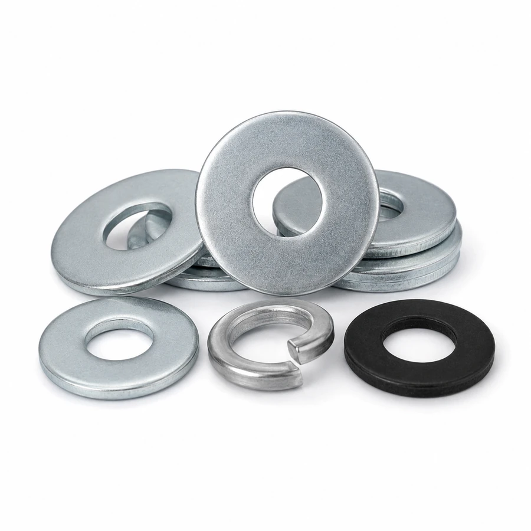

Flat Washers, Spring Washers and Locking Washers
Washers should be confirmed by inner diameter, outer diameter, thickness, hardness where required, material, finish, quantity, and matching bolt or nut assembly before RFQ review. Product images are representative only; final specifications should be confirmed by buyer drawings, standards, samples, or purchase lists.
Quick Buyer Conclusion
Washers should be confirmed by inner diameter, outer diameter, thickness, hardness where required, material, finish, quantity, and matching bolt or nut assembly before RFQ review. Buyers should confirm standard, size, grade, material, finish, quantity, packing, and inspection requirements before requesting a formal quotation.
Washers are often treated as small accessories, but in bulk orders they can create high carton weight and loading risk. Finish and hardness may affect assembly performance.
These pages are product knowledge references for manual sourcing communication, not price pages or automatic transaction pages.

Product images are representative category references only. Final specifications should be confirmed by buyer drawings, standards, samples, or purchase lists.
Common Product Types
Use this table as a starting point for RFQ preparation. Final specifications should come from buyer documents.
| Product Type | Typical RFQ Information | Buyer Note |
|---|---|---|
| Flat washers | Common inquiry data includes standard, size, material, finish, quantity, packing, and application. | Confirm drawings, BOM, samples, or purchase lists before final RFQ. |
| Spring washers | Common inquiry data includes standard, size, material, finish, quantity, packing, and application. | Confirm drawings, BOM, samples, or purchase lists before final RFQ. |
| Lock washers | Common inquiry data includes standard, size, material, finish, quantity, packing, and application. | Confirm drawings, BOM, samples, or purchase lists before final RFQ. |
| Hardened washers | Common inquiry data includes standard, size, material, finish, quantity, packing, and application. | Confirm drawings, BOM, samples, or purchase lists before final RFQ. |
| Large OD washers | Common inquiry data includes standard, size, material, finish, quantity, packing, and application. | Confirm drawings, BOM, samples, or purchase lists before final RFQ. |
| Drawing-based washers | Common inquiry data includes standard, size, material, finish, quantity, packing, and application. | Confirm drawings, BOM, samples, or purchase lists before final RFQ. |
Standards, Grades, Materials and Finishes
Buyers should define the required standard or drawing reference, property class or material grade, surface finish, quantity, and packing requirement. Common finishes may include zinc plating, HDG, black finish, zinc flake coating, or stainless steel where suitable. The correct choice depends on application and buyer requirements.
When a supplier suggests a substitution, the buyer should confirm whether the alternative is acceptable before production. Substitution should not be assumed from similar appearance or similar product names.
RFQ Information Checklist
- Product name
- Standard or drawing reference
- Size and key dimensions
- Thread pitch if applicable
- Grade / class / material
- Surface finish
- Quantity
- Packing and label requirements
- Application environment
- Matching parts if required
- Inspection documents
- Destination or shipment plan
Common Procurement Mistakes
- Quoting washers only by bolt size
- Ignoring thickness
- Ignoring washer hardness where required
- Mixing finish with bolts and nuts without review
- Underestimating bulk packing weight
- Not separating flat washers and spring washers in the RFQ
Manual Review Notes
For first orders or mixed shipments, buyers should separate confirmed repeat items from trial items. This helps the sourcing review identify which products can follow existing drawings and which products need samples, additional documents, or engineering confirmation.
For fastener RFQ review or sourcing communication, send your product list, drawings, standards, quantities, finish requirements, and packing expectations to xyan060816@gmail.com.
Related Sourcing Guides
These links connect the product category to sourcing, document, finish, mixed shipment, and FAQ review.
FAQ
Short answers for buyers preparing manual RFQs.
What information should buyers send for Flat Washers, Spring Washers and Locking Washers?
Buyers should send standard, size, material, grade, finish, quantity, packing, drawings or samples, application, and required inspection documents.
Are product images final specifications?
No. Images are representative references only. Final specifications should be confirmed from drawings, standards, samples, or purchase lists.
What documents can be discussed before shipment?
Depending on the item, buyers may discuss dimensional reports, MTC/MTR, coating reports, thread checks, packing lists, and pre-shipment photos.
How should buyers choose material and finish?
Material and finish should follow application environment, strength requirement, corrosion exposure, thread fit, and buyer project specifications.
Can these products be included in mixed fastener orders?
Yes, mixed orders can be reviewed manually when SKU data, carton data, weight, finish, and packing requirements are clear.
Send RFQ for Manual Review
Share product names, drawings, standards, quantities, finish requirements, packing expectations, and inspection document needs for manual review.
Send RFQEmail: xyan060816@gmail.com